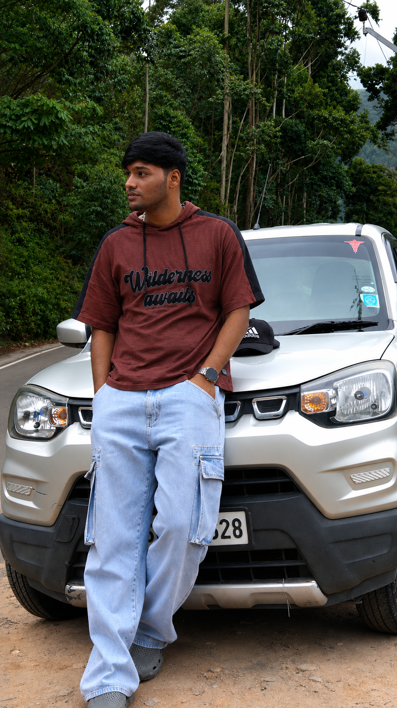
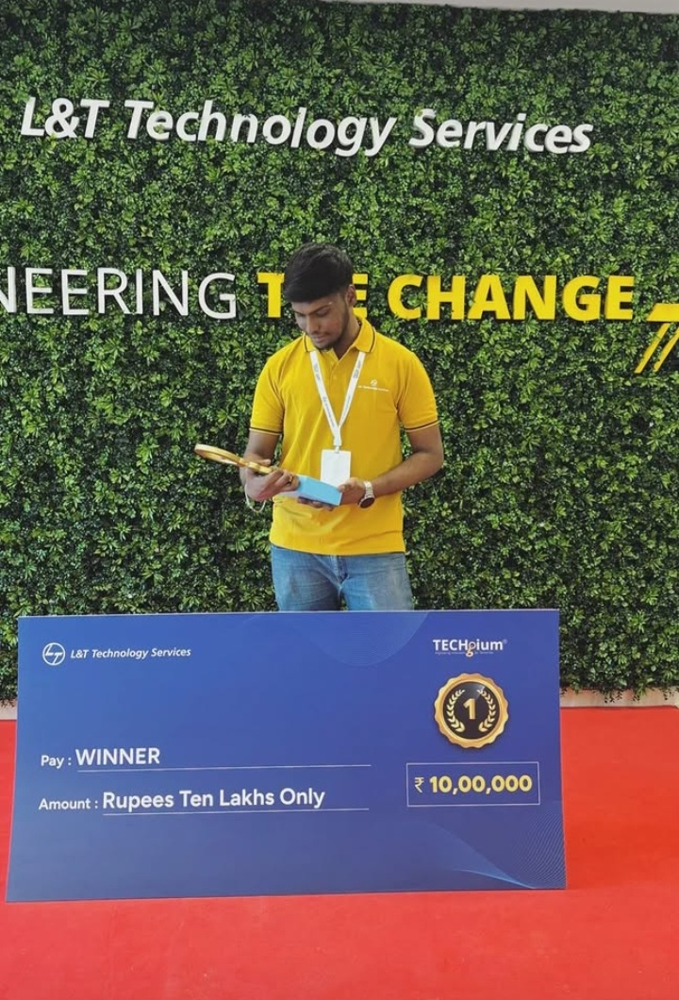
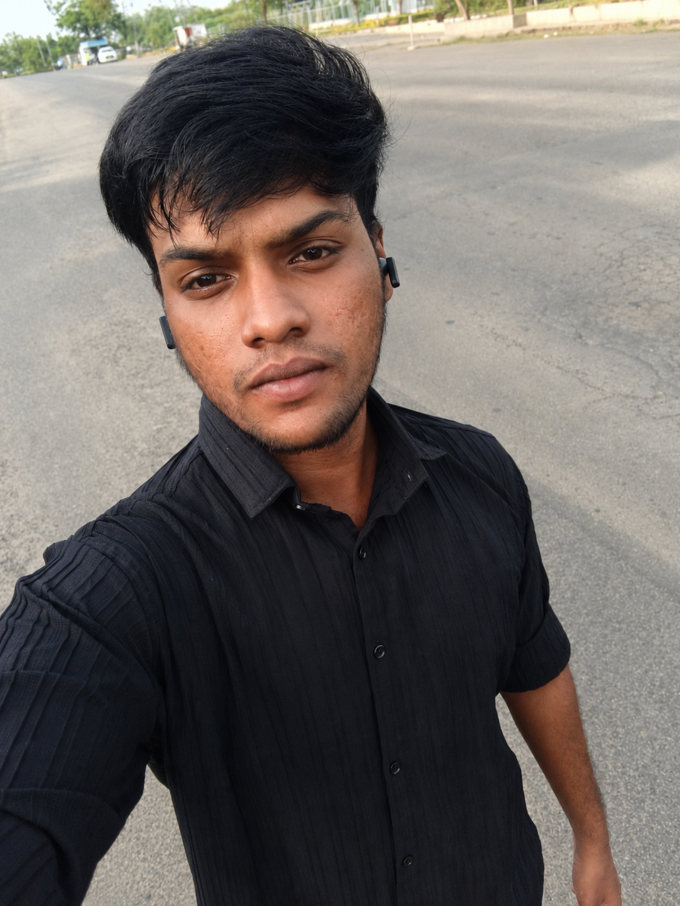

Bharathwaj M. I specialize in industrial robotics, automation, and ROS 2 — developing robotic systems that solve real production problems, improve reliability, and operate with minimal human intervention. Graduated Robotics & Automation Engineering, 2026 — Sri Ramakrishna Engineering College, Coimbatore.
Robotics & Automation Engineering graduate (2026) from Sri Ramakrishna Engineering College, Coimbatore, with a final CGPA of 7.79.
My experience spans two sides of robotics that rarely come together in one engineer: industrial robot on live production lines and ROS 2-based mobile robotics for autonomous navigation and docking. I've worked with Epson 6-DOF industrial robots in iPhone assembly at Foxconn/Korent(LG PRI), where uptime, precision, and repeatability are critical, while also developing mobile-robot systems that perceive, navigate, and interact with their environment in real time.
I focus on reliability, troubleshooting, and real-world deployment. I enjoy working across mechanical, electrical, and software boundaries — diagnosing production issues, optimizing robot behavior, integrating sensors and controllers, and turning robotic algorithms into reliable systems that perform beyond the simulation environment.
Winner — TECHgium® 8th Edition (L&T Technology Services) | ₹10,00,000 Award
Developed an underwater inspection robot for industrial tanks and pipelines, featuring TCP/IP & I2C control, IMU-based pose tracking, and a real-time PyQt5 monitoring interface.
Built a ROS 2 Humble + Nav2 simulation with a custom Tkinter GUI, implementing seven autonomous delivery scenarios including table selection, cancellation, confirmation, and navigation.
Designed an automated warehouse system integrating AGVs, robotic arms, sensors, and cameras for material transport, precision placement, and real-time inventory tracking.